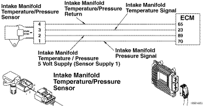
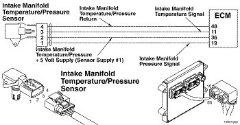
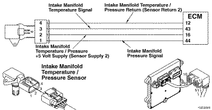

Código de Falha 2973
|
| CÓDIGO | RAZÃO | EFEITO |
| Código de Falha: 2973 PID: P106 SPN: 102 FMI: 2/2 LÂMPADA: Âmbar SRT: |
Pressão 1 no Coletor de Admissão - Dados Inválidos, Intermitentes ou Incorretos. O sensor de pressão no coletor de admissão detecta um valor incorreto quando a chave de ignição é ligada ou durante o funcionamento do motor. |
O ECM estimará a pressão no coletor de admissão. Possível despotenciamento do motor. |
|
 ISF2.8 CM2220AN/ISF3.8 CM2220/ISF3.8 CM2220 AN - Circuito do Sensor de Pressão/Temperatura 1 no Coletor de Admissão
|
|
 ISB4.5, ISB6.7, ISD4.5, e ISD6.7 CM2150 SN/ISL8.9 CM2150 SN/ISZ13 CM2150 - Circuito do Sensor de Temperatura/Pressão 1 no Coletor de Admissão
|
|
 ISM11 CM876 SN - Circuito do Sensor de Temperatura/Pressão 1 no Coletor de Admissão
|
O módulo eletrônico de controle (ECM) fornece uma alimentação de 5 volts para o sensor de pressão no coletor de admissão no circuito de alimentação do sensor. O ECM fornece também um massa no circuito de retorno do sensor. O sensor de pressão no coletor de admissão envia um sinal ao ECM pelo circuito de sinal do sensor. A voltagem do sinal do sensor varia de acordo com a pressão atmosférica.
O sensor de pressão/temperatura 1 no coletor de admissão está localizado na turbina de admissão de ar.
Este diagnóstico é executado quando a chave de ignição é ligada pela primeira vez. O diagnóstico também é executado quando o motor funciona.
Este diagnóstico verifica o valor do sensor de pressão no coletor de admissão quando a chave de ignição é ligada e durante o funcionamento do motor. Se o valor da pressão no coletor de admissão não for igual ao da pressão do ar ambiente quando a chave de ignição for ligada, ou se for maior ou menor que o valor esperado durante o funcionamento normal do motor, este código de falha será ativado.
Este diagnóstico consiste em duas partes. Quando a chave de ignição é ligada, mas não o motor, as leituras da pressão no coletor de admissão, da pressão barométrica e do gás de escape são comparadas entre si. Este código de falha ocorre quando a leitura do sensor da pressão no coletor de admissão é diferente das outras leituras do sensor. Esta verificação é feita somente uma vez depois que a chave de ignição é ligada. Esta falha é ativada também quando a pressão no coletor de admissão é alta demais ou baixa demais para as atuais condições de funcionamento do motor. O ECM compara a leitura da pressão no coletor de admissão para a rotação do turbocompressor para determinar se a leitura da pressão é válida.
Possíveis causas desta falha: